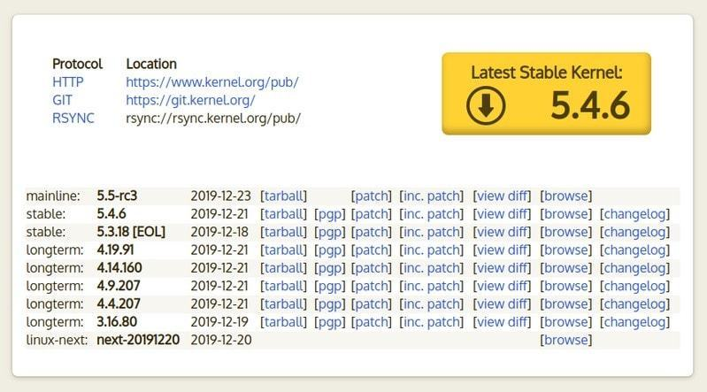

Pourquoi votre distribution utilise-t-elle toujours un noyau Linux «obsolète»?
publié par Dev-Pro
Publié le 1 Janvier 2020 à 11:50 PM
Vérifiez votre version du noyau Linux.
Il y a de fortes chances que vous constatiez que la version du noyau que votre système utilise a déjà atteint la fin de sa vie (EOL= End of life), comme indiqué sur le site Web du noyau Linux.
End of life signifie qu’un logiciel n’obtiendra plus de corrections de bogues ni d’assistance.
Cela pose des questions valables. Pourquoi ma distribution Linux utilise-t-elle un noyau en fin de vie? N'est-ce pas un risque pour la sécurité? Mon système est-il sûr?
Permettez-moi d'expliquer toutes ces questions dans cet article
La prise en charge du noyau en upstream et la prise en charge du noyau de votre distribution sont deux choses différentes.
Par exemple, le noyau Linux 4.15 pourrait avoir atteint la fin de sa vie (selon le site officiel du noyau Linux), mais la version Ubuntu 18.04 LTS l'utilisera et le maintiendra jusqu'en avril 2023 en rétroportant les correctifs de sécurité et les correctifs de bogues.
Vérification de la version du noyau Linux et recherche de son état de fin de vie
Vérifions d'abord la version du noyau Linux sur votre système:
uname -r
J'utilise Ubuntu 18.04 et cela montre la version du noyau Linux comme ceci:
siz@siz:~$ uname -r
5.0.0-37-generic
Maintenant, vous pouvez aller sur le site officiel du noyau Linux et voir quels noyaux Linux sont toujours pris en charge. Il est affiché sur la page d'accueil elle-même.
Vous devriez voir un statut comme celui-ci:

Si vous ne voyez pas de version de noyau répertoriée sur la page d'accueil du site Web du noyau, cela signifie qu'une version spécifique a atteint la fin de sa durée de vie.
Comme vous pouvez le voir, le noyau 5.0 n'est pas répertorié ici. Cela indique que cette version du noyau n'est plus prise en charge. En fait, il est arrivé en fin de vie en juin 2019
Malheureusement, le cycle de vie d'un noyau Linux ne suit pas un modèle défini. Ce n'est PAS comme si une version stable du noyau régulière était prise en charge pendant X mois et un noyau de support à long terme (LTS) serait pris en charge pendant Y ans.
En fonction de la demande et des exigences, il pourrait y avoir plusieurs versions de noyau LTS avec différentes fin de vie. Vous pouvez les trouver avec leur fin de vie projetée sur cette page.
Vient maintenant la grande question. Pourquoi Ubuntu fournit-il le noyau 5.0 si le site Web du noyau Linux montre qu'il a atteint sa fin de vie?
Votre distribution utilise un noyau Linux EOL mais ça va!
Vous êtes-vous déjà demandé pourquoi Ubuntu / Debian / Fedora, etc. sont appelés distributions Linux? C’est parce qu’ils «distribuent» le noyau Linux.
Ils ont leur propre modification du noyau Linux, ils ajoutent les éléments GUI (environnement de bureau, serveur d'affichage, etc.) et les logiciels et ils le mettent à la disposition de leurs utilisateurs.
Dans le flux de travail typique, une distribution Linux choisira un noyau à fournir à ses utilisateurs. Et puis, il conservera ce noyau pendant des mois ou des années même après la fin de vie du noyau.
Comment est-ce sûr alors? C'est parce que la distribution maintient le noyau en rétroportant toutes les corrections importantes à son noyau.
En d'autres termes, votre distribution Linux s'assure que votre noyau Linux est bien corrigé et a toutes les corrections de bogues et les nouvelles fonctionnalités importantes qui lui sont rétroportées. Il y aura des milliers de changements en plus de «l'ancien noyau Linux obsolète».
Lorsque le site Web du noyau Linux indique qu'une certaine version du noyau a atteint EOL, cela signifie que les principaux responsables du noyau Linux ne vont plus mettre à jour / corriger cette version du noyau.
Mais en même temps, les développeurs de Debian / Ubuntu ou d'autres distributions travaillent pour garder la même ancienne version en vie en apportant les modifications pertinentes des versions plus récentes du noyau (maintenues par l'équipe du noyau) à l'ancien noyau de votre distribution.
En fin de compte, même s'il semble que votre distribution utilise un noyau Linux obsolète, il est en fait bien entretenu et pas vraiment obsolète.
Devriez-vous utiliser la dernière version stable du noyau?
Une nouvelle version stable du noyau Linux est publiée tous les 2-3 mois. Et cela fait que de nombreux utilisateurs se demandent qui ils peuvent mettre la main sur cette nouvelle chose brillante.
Pour être franc, vous ne devriez pas faire cela à moins d'avoir une assez bonne raison à cela. Votre distribution ne vous le fournit pas. Vous ne pouvez pas simplement utiliser ‘sudo apt give-me-the-latest-stable-kernel’.
Maintenant, l'installation manuelle de la version du noyau Linux principal pourrait être un défi en soi. Même si vous parvenez à l'installer, c'est à vous de vous assurer que ce noyau est mis à jour à chaque fois qu'il y a un bug. Et lorsque ce nouveau noyau arrive en fin de vie, il vous incombe de passer à la nouvelle version du noyau. Il ne sera pas géré avec une mise à niveau appropriée comme les mises à jour régulières d'Ubuntu.
Vous devez également garder à l'esprit que votre distribution contient également des pilotes et des correctifs que vous ne pourrez peut-être pas utiliser si vous passez au noyau principal.
J'espère que vous comprenez mieux ce sujet et que vous ne paniquerez pas la prochaine fois que vous découvrirez que la version du noyau que votre système utilise a atteint la fin de sa vie.